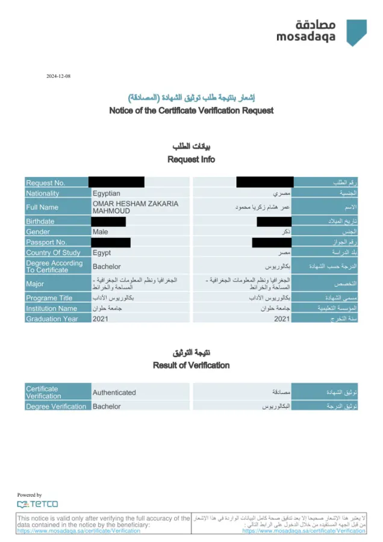

Open to GIS Administrator opportunities · Riyadh, KSA
Hi, I'm Omar Hisham Zakaria
GIS Administrator|Enterprise GIS · Utility Network · Geospatial Data Management
I build and safeguard enterprise geodatabases, ArcGIS Enterprise portals and utility networks — turning raw CAD and field data into accurate, validated, decision-ready GIS for municipalities and utilities across Saudi Arabia and Egypt.
ArcGIS Enterprise
Utility Network
QA / QC
- Years in GIS
- 0+
- Organizations
- 0
- Certified courses
- 0+
- Countries
- 0
01
Professional Summary
GIS professional with 6+ years of experience in GIS data management, enterprise GIS administration, spatial analysis and geospatial data quality across utility, infrastructure, urban planning and municipal projects in Saudi Arabia and Egypt.
Strong command of the Esri ecosystem — ArcGIS Pro, ArcGIS Enterprise, ArcGIS Online, Enterprise Geodatabases, Utility Network, Data Reviewer, Attribute Rules, Topology, ModelBuilder, Experience Builder and ArcGIS Dashboards — with practical FME, Python and SQL automation.
I specialise in turning complex CAD, as-built and field data into accurate, structured and published geospatial information that supports infrastructure, utilities, asset management and operational decision-making.
- LocationRiyadh, Saudi Arabia
- Current roleGIS Specialist — Riyadh Region Municipality
- Saudi Council of EngineersRegistered Specialist (Surveying)
- EducationB.A. Geography & GIS — Helwan University
- LanguagesArabic (native) · English (professional)
02
Professional Experience
-
GIS Specialist
Riyadh Region General Secretariat — Municipality and Privatization Agency · Riyadh, KSA
- Administer and maintain enterprise geodatabases for land contracts, ATM and bank licenses, telecom tower contracts, utilities and infrastructure assets, ensuring accuracy, integrity and completeness.
- Support ArcGIS platform projects across ArcGIS Pro, ArcGIS Enterprise and ArcGIS Online for data management, editing, analysis, validation and publishing.
- Run spatial analysis and site suitability assessments for infrastructure planning and location-based decision-making.
- Apply Data Reviewer, Topology, Attribute Rules and ModelBuilder for GIS QA/QC, improving data accuracy and workflow efficiency.
- Perform CAD-to-GIS and as-built-to-database conversion; automate processing and validation with Python and SQL.
- Publish finalized datasets to ArcGIS Enterprise / Online and deliver maps, KMZ/Excel datasets, tender plans and technical reports to stakeholders.
-
GIS Expert Assistant
General Organization for Physical Planning (GOPP) · Egypt
- Created and maintained urban sector GIS layers from base maps and populated descriptive attribute tables for urban planning.
- Prepared Excel and KMZ datasets, map layouts and geospatial outputs for review in Google Earth.
- Supported spatial analysis, mapping, data preparation and GIS documentation for urban and regional planning.
-
GIS Analyst – Quality Control
The Modern Natural Gas Company · Egypt
- Performed GIS QC on point, line and polygon datasets for spatial integrity and compliance with project standards.
- Validated data with Esri Data Reviewer, Attribute Rules and Topology Rules, and drove corrective actions.
- Supported natural gas Utility Network workflows: CAD-to-GIS, network topology, load analysis, test sections, fittings and Material Take-Off (MTO).
- Managed utility enterprise geodatabases and published services via ArcGIS Enterprise Portal, Experience Builder and Dashboards.
- Built geoprocessing workflows with ModelBuilder, FME and Python for transformation and automation.
- Contributed to Digital Transformation, Haya Karima, Jubail City, Crossing and As-Built-to-Database projects.
-
GIS Specialist
Micro Engineering Technic (METI)
- Used Mobile Mapping Systems to label 3D objects and verify data and map accuracy against standards for Smart City projects.
-
GIS Specialist – Saudi Electricity Project
EKC Geographic Information Systems
- Digitized and attributed LV/MV lines, meters and transformers for Jubail City, Hafar Al-Batin and Qaryat Al-Ulya.
-
GIS Specialist – Saudi Electricity Project
Farsi Geotech
- Supported the expansion of the electrical distribution network GIS for a Saudi utility project.
03
Technical Skills
Data Management & Administration
Quality Assurance / QC
Automation & ETL
GIS & Engineering Tools
Analysis & Reporting
Core Competencies
- Enterprise GIS Administration
- Geodatabase Design & Management
- Utility Network & Utility GIS
- GIS QA/QC & Data Integrity
- CAD-to-GIS & As-Built Conversion
- Workflow Automation & Geoprocessing
- Site Suitability & Location Analysis
- GIS Data Editing & Publishing
- GIS Data Transformation & ETL
- Cartography & Visualization
- Urban GIS & Infrastructure Mapping
- Technical GIS Documentation
04
Selected Work
A sample of maps, utility networks and enterprise GIS deliverables. Click any map to enlarge.
Interactive
Low-Pressure Gas Distribution Network — Sohag, Egypt
Real utility data I processed, reprojected from WGS 84 / UTM 36N to web map. Pan, zoom and click a pipe to inspect its class and length.
100 mbar Distribution Network Layout
Issued-for-construction test-section sheet for Sohag sectors 13–15: legend, call-outs, pipe classes and title block.
Gas Utility Network in ArcGIS Pro
Pipeline assemblies, devices, junctions and lines modelled in the Esri Utility Network.
Automated Network QA with ModelBuilder
Geoprocessing model generating end caps and validating pipeline connectivity at scale.
Municipal Sectors & Licensed Assets
Sector boundaries with ATM, bank and telecom-tower contract locations from the enterprise geodatabase.
Asset Distribution Overview
Symbolized asset categories over municipal boundaries for planning and reporting.
Infrastructure Corridors
Linear infrastructure routes with attributed asset points over satellite imagery.
Network Routes by Category
Multi-class line network styled by category for stakeholder review.
Site Suitability Analysis
Parcel-level suitability assessment highlighting candidate plots for a proposed facility.
Urban Planning Map Sheet
Production map layout with inset, legend and title block for a planning study.
Urban Sector Digitizing
Urban blocks and parcels digitized and attributed over high-resolution imagery.
Makkah Site Locations & Planning Boundaries
Numbered project sites across Makkah mapped against existing ring roads, the Haram legal boundary and the urban growth boundary, with zoomed insets of site clusters and Wadi Nu’man plots.
05
Certifications & Education
Saudi Council of Engineers — Specialist
Registered member, Surveying specialization · 2026 – 2027
Professional Accreditation — Geographer
Ministry of Human Resources & Social Development, KSA · 2025
GIS Expert Assistant
General Organization for Physical Planning · 2025
Verified Documents
Professional Accreditation CertificateMinistry of Human Resources & Social Development, KSA · Geographer (263202) · 2025View PDF ↗

Degree Verification (Attestation)Bachelor's degree authenticated · Certificate verification request, 2024View PDF ↗ Graduation & Experience CertificatesHelwan University degree and experience letters and course certificates · 22 pagesView PDF ↗Certificates
Training
- Esri — 10 certified GIS courses
- Geosteps Academy — 2 certified GIS courses
- Udemy — 2 certified GIS courses
- Coursera — 2 certified GIS courses
- Edraak — Certified AI course
- The Arab Contractors — Summer internship, 2019
- African Centre for Surveying Services — Summer internship, 2018
Education
2021
Bachelor's Degree in Geography and Geographic Information Systems (GIS)
Helwan University — Faculty of Arts, Maps & Survey Department
Cumulative grade: Very Good
06
Let's map your next project
Looking for a GIS Administrator to own your enterprise GIS, geodatabases and data quality? I'm available for full-time roles in Saudi Arabia.
Download CV